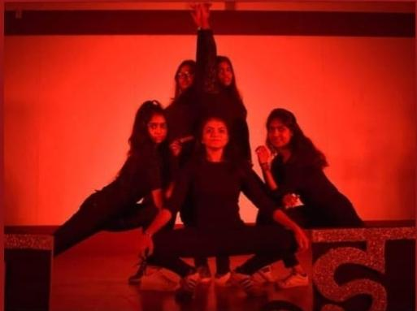
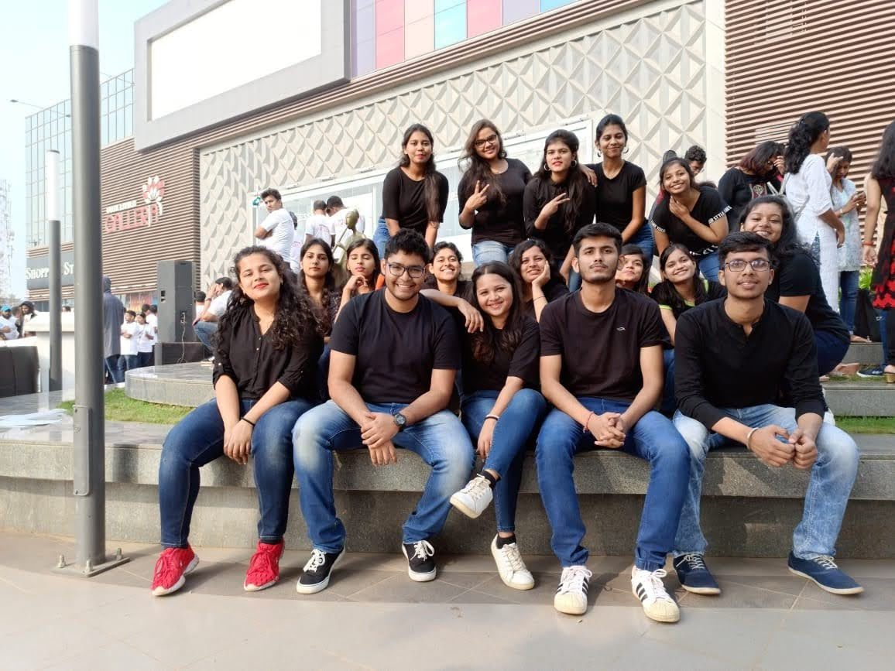
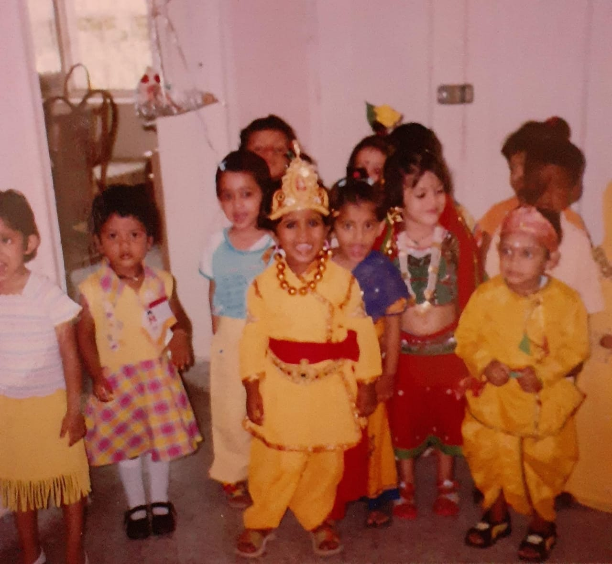
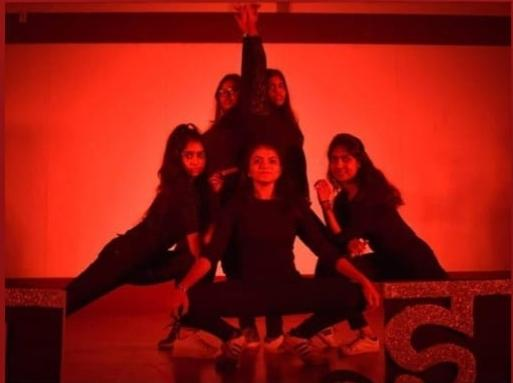
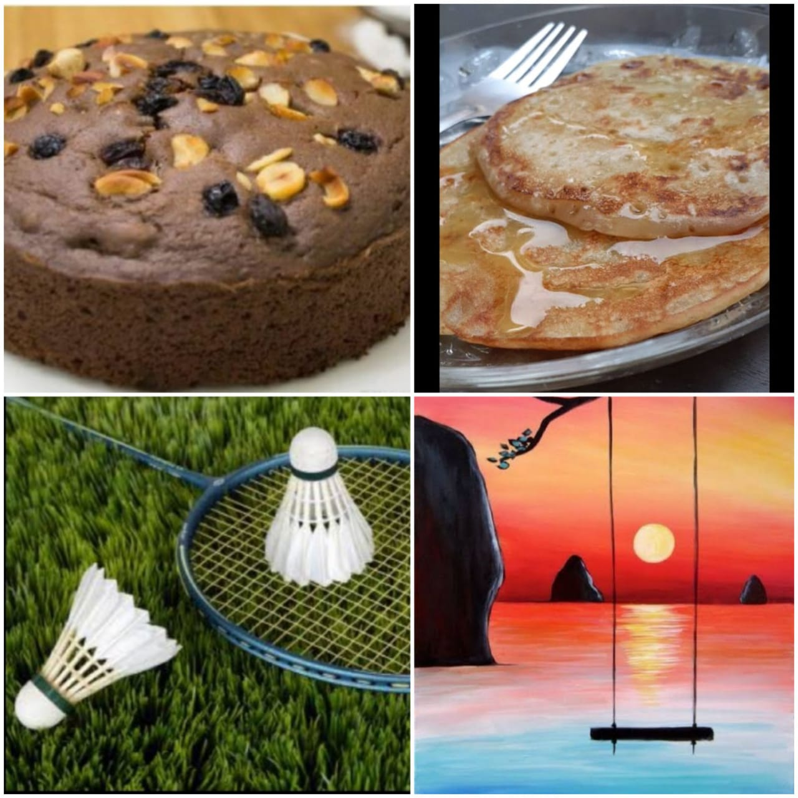

I just dance for fun!!!
U can view my recently uploaded dance!!!
| Home | About | Feedback |
|---|
|   |
I just dance for fun!!! U can view my recently uploaded dance!!! |
|  | I feel pleased and enthusiastic to play this game. It also gives me the lesson of hard work. I love to play badminton Ever since I took the paintbrush and just crafted something on paper, and have been trying my hands on it since then |